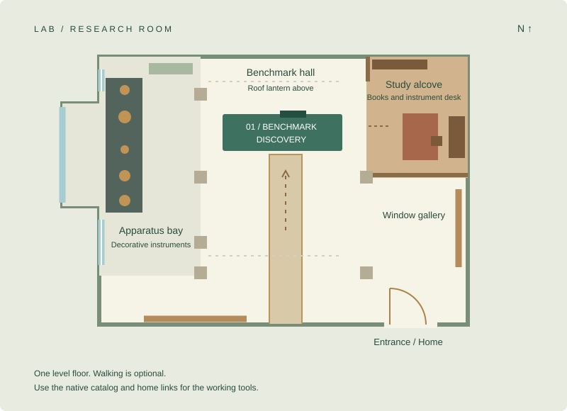

The workshop

Flat room view. Open the catalog or home using the links above.
Entrance · facing north
JavaScript is off. Use the flat room plan and the catalog or home links above.
Research room
Click or tap the floor to walk there. Select an instrument or piece of furniture to approach it. Select the benchmark bench or home door to walk over and open its controls. Drag to look.
Focus the room to walk with WASD. Arrow keys walk and turn. Enter or E opens a nearby station. Manual movement or dragging stops a route; a new tap replaces it. Esc stops walking and releases room focus.
Direction buttons support holds and small taps. The catalog and home links are always available above the room.
01 / Benchmark bench
The public catalog opens as a normal page, with search, evidence, and detailed tools.